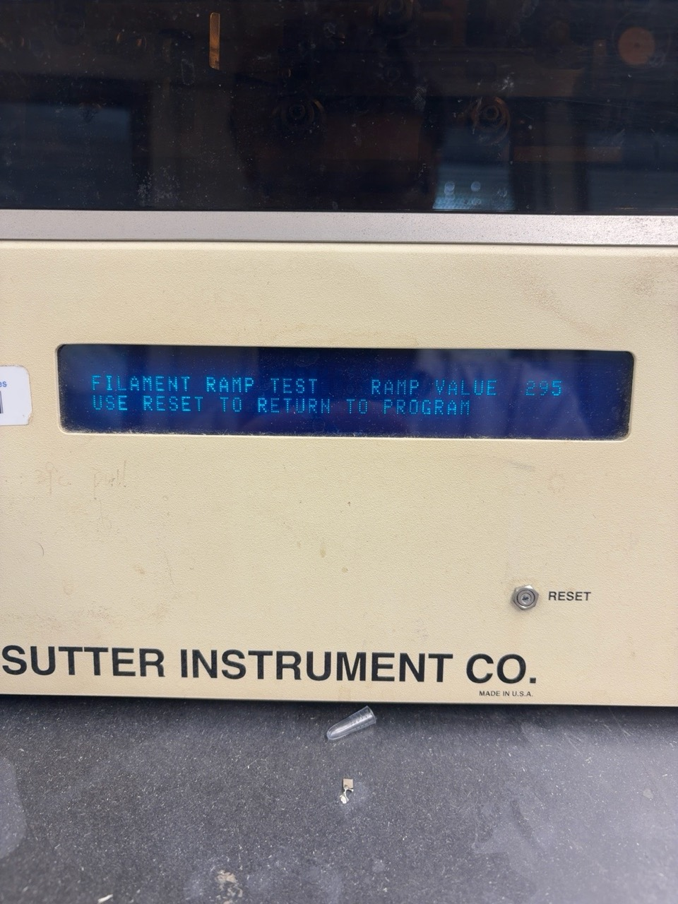
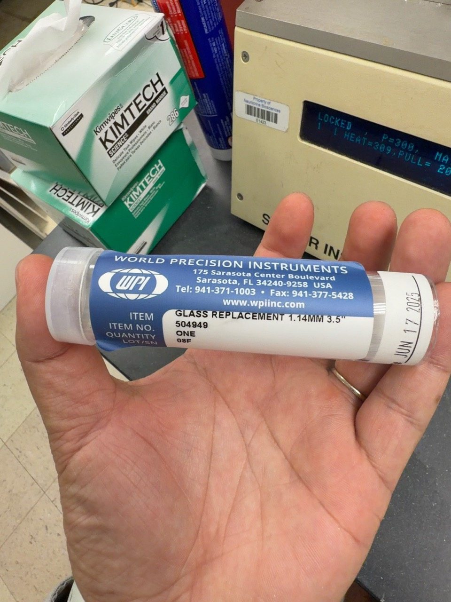

Frequently used links & lab resources.
66 resourcesVCU graduate funding, travel awards, and student program funding. The Campus Catalyst Challenge supports proposed programs or events.
Graduate fellowships and trainee travel awards from external funders. NIH and NIA resources also include postdoctoral opportunities; check each program’s eligibility.
Application planning, sample proposals, and small-business funding resources.
Filament: FT330B.
Glass pipette: World Precision Instruments (WPI), item 504949; labeled “GLASS REPLACEMENT 1.14MM 3.5"”.
Watch the filament replacement video: Installing a Filament
295 is the result shown in this photo; record the value from your own test.
The following settings worked for a longer taper in the lab using the FT330B filament and WPI glass listed above:


Remember to book a room for every graduate student committee meeting. Use the department administration page to reserve Neuroscience department conference room 12-079.
VCU eID required; some systems require the VCU network or VPN.
No resources match that search.
Programs, deadlines, and eligibility change. Confirm details on the official page before relying on them.